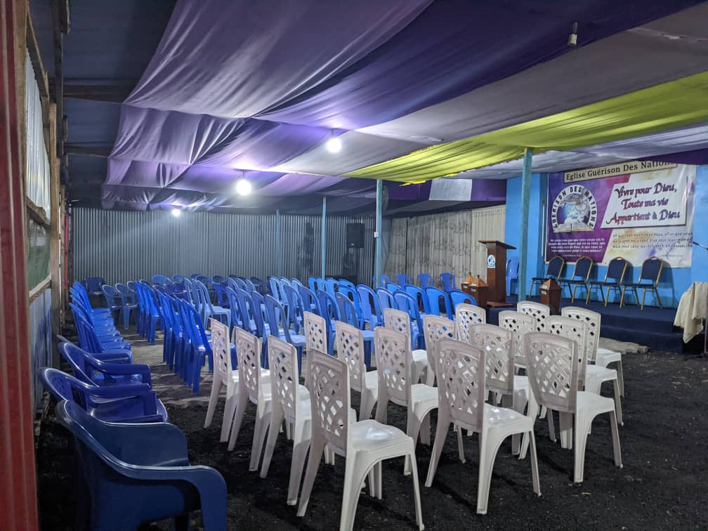

Suivez-nous sur nos réseaux sociaux
Voyez ce que Dieu peut faire avec vous
Les choses peuvent sembler un peu différentes
mais, il y toujours de nombreuses
façons de se connecter à EGN.
Connaitre notre pasteur
Eglise Guérison des Nations est dirigée par le bergé et
d'autres hommes de Dieu dans la ville de Goma
En savoir plus
Vous pouvez faire la différence
Dieu continue d'oeuvrer au travers ses serviteurs

Adorateurs
Pour l'avancement de l'oeuvre de Dieu faites vos dons et vous serez bénis
En savoir plus sur les Donations.
Enfants de Dieu
Groupe d'adoration la louange, toujours entrain de louer le bon Dieu
En savoir plus sur les Ministères.

Planifier votre visite.
Visiter Eglise Guérison des Nations
Vous êtes tous les bienvenus l'à Eglise Guérison des Nations
Planifier votre visite.